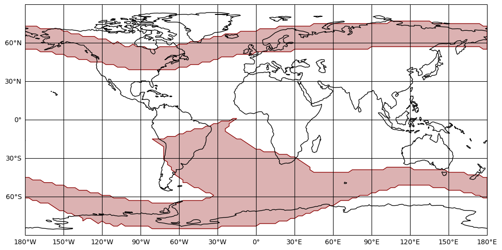
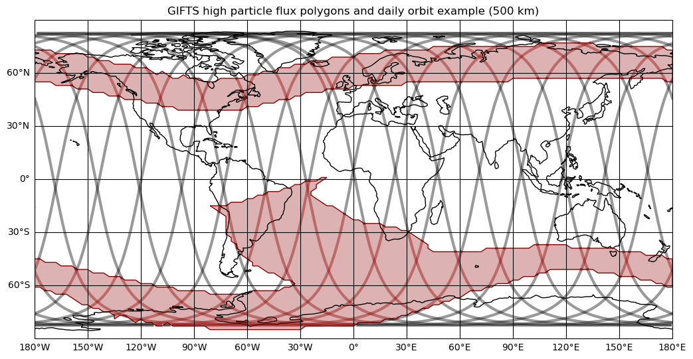
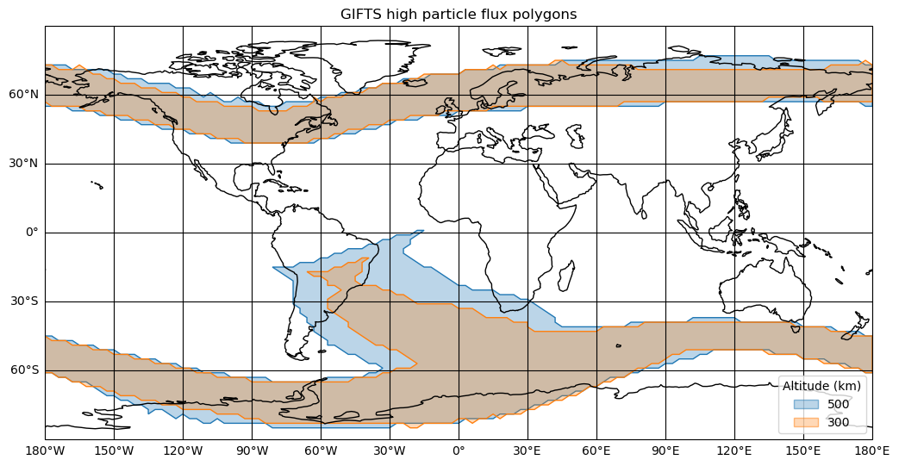
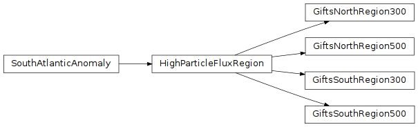

GIFTS High Particle Flux Region Boundary Definitions (gdt.missions.gifts.region)¶
As GIFTS will have a sun-synchronous orbit, it will traverse two high particle flux regions,
in the northern and southern
hemisphere respectively, with the South Atlantic Anomaly (SAA) region contained in the latter.
When GIFTS is within these regions, the detectors are turned off
and data collection is paused. Regions are defined at multiple alitudes as polygons in
latitude and longitude using instances of the HighParticleFluxRegion class,
where this library currently provides definitions for altitudes of 500 km and 300 km
(it is envisaged that additional definitons will be provided during the mission).
The boundary values for a polygon are retrieved using the corresponding class, for example, looking at the north region at 500 km:
>>> from gdt.missions.gifts.region import GiftsNorthRegion300, GiftsSouthRegion300, GiftsNorthRegion500, GiftsSouthRegion500
>>> north500_region = GiftsNorthRegion500()
>>> north500_region.latitude
array([39., 39., 39., 39., 39., 39., 39., 39., 39., 39., 39., 39., 39.,
41., 41., 41., 43., 43., 43., 45., 45., 45., 47., 47., 49., 49.,
49., 49., 51., 51., 51., 51., 51., 53., 53., 53., 53., 53., 53.,
53., 53., 53., 53., 55., 55., 55., 55., 55., 55., 55., 55., 55.,
55., 55., 55., 55., 55., 55., 55., 55., 55., 55., 55., 57., 57.,
57., 57., 57., 57., 57., 57., 57., 57., 57., 57., 57., 57., 57.,
57., 57., 57., 57., 57., 57., 57., 57., 57., 57., 57., 57., 57.,
57., 55., 55., 57., 59., 61., 63., 65., 67., 69., 71., 73., 73.,
75., 75., 75., 75., 75., 75., 75., 75., 75., 75., 75., 75., 75.,
77., 77., 77., 77., 77., 77., 77., 77., 77., 77., 77., 75., 75.,
75., 75., 75., 75., 75., 75., 75., 75., 75., 75., 75., 75., 75.,
75., 75., 75., 75., 75., 73., 73., 73., 73., 73., 73., 73., 73.,
73., 71., 71., 71., 71., 71., 69., 69., 69., 69., 69., 67., 67.,
67., 67., 65., 65., 65., 63., 63., 63., 61., 61., 61., 59., 59.,
59., 57., 57., 57., 57., 57., 55., 55., 55., 57., 57., 57., 59.,
57., 57., 59., 61., 59., 61., 63., 63., 63., 65., 65., 65., 65.,
67., 67., 67., 69., 69., 71., 71., 71., 71., 71., 71., 73., 73.,
73., 73., 71., 69., 67., 65., 63., 61., 59., 57., 55., 55., 55.,
55., 53., 53., 53., 53., 51., 51., 51., 49., 49., 49., 47., 47.,
47., 45., 45., 45., 45., 43., 43., 43., 41., 41., 41., 39.])
>>> north500_region.longitude
array([ -99., -96., -93., -90., -87., -84., -81., -78., -75.,
-72., -69., -66., -63., -60., -57., -54., -51., -48.,
-45., -42., -39., -36., -33., -30., -27., -24., -21.,
-18., -15., -12., -9., -6., -3., 0., 3., 6.,
9., 12., 15., 18., 21., 24., 27., 30., 33.,
36., 39., 42., 45., 48., 51., 54., 57., 60.,
63., 66., 69., 72., 75., 78., 81., 84., 87.,
90., 93., 96., 99., 102., 105., 108., 111., 114.,
117., 120., 123., 126., 129., 132., 135., 138., 141.,
144., 147., 150., 153., 156., 159., 162., 165., 168.,
171., 174., 177., 180., 180., 180., 180., 180., 180.,
180., 180., 180., 180., 177., 174., 171., 168., 165.,
162., 159., 156., 153., 150., 147., 144., 141., 138.,
135., 132., 129., 126., 123., 120., 117., 114., 111.,
108., 105., 102., 99., 96., 93., 90., 87., 84.,
81., 78., 75., 72., 69., 66., 63., 60., 57.,
54., 51., 48., 45., 42., 39., 36., 33., 30.,
27., 24., 21., 18., 15., 12., 9., 6., 3.,
0., -3., -6., -9., -12., -15., -18., -21., -24.,
-27., -30., -33., -36., -39., -42., -45., -48., -51.,
-54., -57., -60., -63., -66., -69., -72., -75., -78.,
-81., -84., -87., -90., -93., -96., -99., -102., -105.,
-108., -111., -114., -117., -120., -123., -126., -129., -132.,
-135., -138., -141., -144., -147., -150., -153., -156., -159.,
-162., -165., -168., -171., -174., -177., -180., -180., -180.,
-180., -180., -180., -180., -180., -180., -180., -177., -174.,
-171., -168., -165., -162., -159., -156., -153., -150., -147.,
-144., -141., -138., -135., -132., -129., -126., -123., -120.,
-117., -114., -111., -108., -105., -102., -99.])
Region boundaries may be plotted using GiftsEarthPlot. Here the regions at an altitude of 500 km are plotted:
>>> import matplotlib.pyplot as plt
>>> from gdt.missions.gifts.plot import GiftsEarthPlot
>>> plot = GiftsEarthPlot(regions=[GiftsNorthRegion500(), GiftsSouthRegion500()])
>>> plt.show()

These polygons have been used with an example daily orbit to illustrate when the detectors will be turned off (where orbit lines are red):

Here, the polygons for altitudes of 500 km and 300 km are plotted:

Reference/API¶
gdt.missions.gifts.region Module¶
Classes¶
A base class for a high particle flux region boundary in Earth latitude and longitude. |
|
|
|
|
|
|
|
|
Class Inheritance Diagram¶
